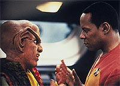
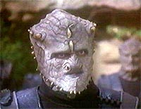
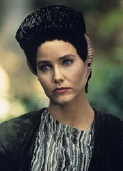
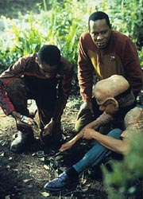
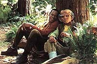
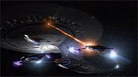
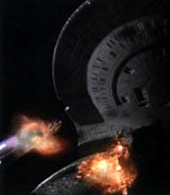

MANCHETE
DO EPISDIO
Aventura
apresenta o Dominion e gera
impacto profundo no futuro da srie
Episdio
anterior | Prximo
episdio
Sinopse:
Data Estelar:
desconhecida.
O comandante Sisko convence seu
filho Jake a visitar o quadrante Gama, misturando lazer com
pesquisas planetrias. Nog, precisando de nota na escola de
Keiko, acaba pegando carona, e o seu tio Quark, querendo convencer
o comandante a permitir uma campanha publicitria de seu bar por
toda a estao, tambm se auto-convida. Em um planeta deserto,
aps um dia de trabalho, os quatro se sentam beira da fogueira
para jantar. Nog (envergonhado pelas atitudes de Quark) e Jake vo
dar uma volta quando Sisko e Quark so surpreendidos por Eris,
uma fmea aliengena em fuga, com poderes telecinticos. Logo
os trs so capturados pelos soldados Jem'Hadar (que possuem uma
capacidade individual de ocultamento), fora militar do (j
citado na srie, porm ainda bastante misterioso) Dominion.

Sisko,
Quark e Eris so presos em um mesmo campo de fora, e as
habilidades de Eris so inibidas por um colar especial. Ela diz
que o Dominion normalmente consegue anexar territrios atravs
de intricadas negociaes e tratados, porm quando no
consegue atingir os seus objetivos desta forma, os seus Fundadores
enviam os Jem'Hadar. Sisko decide que o mais importante a ser
feito remover o colar de Eris, para que ela possa atravessar o
campo de fora com sua telecinese. Nisto, Talak'Talan, o
Jem'Hadar encarregado, se aproxima do campo de fora e informa
que o Dominion no ir mais tolerar naves atravessando a Fenda
Espacial e violando o seu territrio. Jake e Nog encontram o
acampamento Jem'Hadar e, devido impossibilidade de oferecerem
alguma ajuda direta, decidem se transportar para o Explorador em
rbita, para fugir e pedir ajuda. Jake desmonta metade da nave
para desativar o piloto automtico e tirar a nave de rbita. A
percebe que, com esta atitude, a nave agora s pode ser pilotada
no manual. E ele comea a faz-lo, aos trancos e barrancos.
Em Deep Space Nine, Talak'Talan faz uma visita e entrega a Kira um
pad contendo a lista de todas as naves destrudas pelo Dominion.
O pad em si um resqucio de Nova Bajor, a primeira colnia
Bajoriana no quadrante Gama. O Jem'Hadar entra e sai da estao
como se suas defesas no fossem nada. Chega estao o capito
Keogh, da nave da classe Galaxy Odyssey, com ordens de lidar com a
ameaa Jem'Hadar e resgatar Sisko e os outros. A Odyssey parte
com os dois exploradores restantes nesta misso. Eles encontram
inicialmente o explorador Rio Grande com Jake e Nog a bordo.
O'Brien se transporta a bordo e leva a nave de volta ao planeta em
que Sisko, Quark e Eris esto presos. Inicia-se uma ferrenha
batalha com as naves Jem'Hadar.

Quark
finalmente abre o colar de Eris e os trs conseguem fugir. Eles so
transportados a bordo do Rio Grande. Quando O'Brien informa a
Keogh que todos esto a bordo, o capito ordena a retirada. Mas
uma nave Jem'Hadar destri a Odyssey em uma manobra
"Kamikaze". Os trs Exploradores voltam estao em
meio a uma atmosfera muito pesada. Ao chegar, Quark informa a
Sisko, reservadamente, que o colar de Eris era apenas um mecanismo
de travamento, no tinha nenhum efeito supressor sobre sua
telecinese. Confrontada a esse respeito, Eris diz que Sisko e cia.
no tm idia da sucesso de eventos que vir. Sisko diz que
vai fazer de tudo para estar preparado para os prximos
movimentos do Dominion.
Comentrios:
"The Jem'Hadar" diverso garantida, caindo na
categoria de "thriller de ao" (dentre aqueles que
melhor funcionaram durante a srie), ou como muitos gostam de
falar na rede: um excelente "DS9 Comic Book". No episdio
temos: muito humor (infelizmente derivando para a comdia pastelo
em certas partes, alm de problemas de caracterizao e atuao
com relao a Nog e Quark), ao extremamente bem executada
sob a firme batuta da diretora Kim Friedman e um slido pico dramtico
quando da cena em que Talak'talan informa a Kira da destruio
de Nova-Bajor. Temos tambm a formal introduo do Dominion,
com uma excelente (e correta desde o incio) caracterizao
para os primeiros protagonistas Jem'Hadar e Vorta da srie.
Saibam mais detalhes nas linhas abaixo. Leiam, seno os Jem'Hadar
vo pegar vocs!

A
idia do Dominion veio crescendo ao longo da temporada como uma
impressionante aliana poltica e econmica no quadrante Gama,
que utiliza freqentemente a fora para impor uma atitude
imperialista. Essas idias foram lanadas com pequenas falas nos
episdios "Rules
Of Acquisition" (com uma referncia direta no
presente episdio), "Sanctuary"
e "Shadowplay",
todos da segunda temporada. Juntando-se a isso o fato de a colnia
de Nova Bajor ter sido mencionada anteriormente em "Crossover",
temos um sentido de real direcionamento para a srie.
(Este episdio muito importante para o entendimento da srie.
O Dominion um dos elementos principais de DS9: a partir
daqui nenhuma temporada comeou ou terminou sem uma histria
relativa potncia do quadrante Gama --mesmo que aparentemente
eles no estivessem envolvidos, eles estavam! A introduo do
Dominion, especialmente dos Fundadores, no primeiro episdio da
terceira temporada, afetou profundamente um dos regulares,
trasformando-o em um das duas figuras mais trgicas da srie, ao
lado de Garak. O seu dilema s iria terminar no ltimo episdio
da srie.)
A trama do episdio deve ser analisada em duas passadas, na
primeira aceitando a sinceridade de Eris (e a coincidncia de
Sisko e cia. darem de cara com ela em um planeta sendo perseguida
pelos Jem'Hadar) e na segunda considerando toda a farsa do
Dominion (cuja revelao pe por terra qualquer possvel
problema com a trama que algum possa ter tido no curso da
primeira assistida). Ambas funcionam bastante bem, a histria de
Eris soa totalmente verdadeira oferecendo uma coerente perspectiva
das atitudes do Dominion no quadrante Gama e a trama revisitada
revela brilhantemente uma das caractersticas principais do
Dominion: a arte da manipulao e da intriga. O sacrifcio da
nave Jem'Hadar e de Eris serviu para adiantar o nvel de adorao
que os Jem'Hadar e os Vortas tm pelos Fundadores.

Sisko
"jogou bem a sua mo" em todo o episdio e a sua
promessa final no ficar sem resposta na prxima temporada. A
devastao de Kira quando da notcia da destruio de Nova
Bajor foi algo que j valeu o episdio. A j tradicional
"cena da despedida antes da batalha", aqui estrelando
Kira e Odo, funcionou maravilhosamente bem (como era de se esperar
entre os dois). O relacionamento entre Jake e Ben Sisko esteve slido
como sempre, e as atitudes de Jake, aps a captura de seu pai,
fizeram um bocado de sentido. Quark iniciou muito mal (as cenas
com ele passando cremes nas orelhas e pegando fogo foram lamentveis),
mas se recuperou com o papel tornando-se mais srio ao longo do
episdio (e paradoxalmente o seu humor comeou a funcionar
melhor tambm). Foi particularmente interessante o fato de ele
descobrir o truque do colar de Eris devido simplesmente ganncia.
Os demais regulares ajudaram a levar a trama frente com
fluidez.
Keogh me impressiona com um velho (e simptico) lobo do mar, pena
que aparea to pouco. Sua permisso para que a tripulao de
DS9 acompanhasse a Odyssey (em Exploradores) foi bastante
interessante (ainda que tecnicamente discutvel). Talak'Talan foi
de arrepiar, especialmente quando oferece a Sisko informaes
especficas do quadrante Alfa e lamenta casualmente ter
encontrado um humano e um Ferengi, no um Klingon. Mas sua melhor
cena foi quando atravessou o campo de fora do OPS como se fosse
de manteiga e deu a Kira o pad Bajoriano e a informou da destruio
de Nova Bajor. Eris e seu gestual totalmente desligado do resto do
mundo foi no menos arrepiante, vendo o episdio uma segunda
vez. A revelao de sua farsa veio sem surpresas: Eris a
deusa da discrdia! Quanto a Nog, enquanto podemos dizer que
alguns elementos aqui, como a sua adaptao comida humana e o
seu interesse por naves, possam ter sido os embries dos
principais desenvolvimentos futuros do personagem (que o levariam
Academia da Frota Estelar), a sua presena prejudicou o episdio.

A
direo de Friedman excepcional, com destaques para as belas
tomadas superiores de Quark, Sisko e Eris presos no campo de fora,
as cenas de batalha no interior da ponte da Odyssey e a destruio
da prpria Odyssey. Mritos aqui tambm para a equipe de
efeitos visuais. Ainda que o tempo j tenha erodido o estrito
"cool factor" das cenas, a execuo de tomadas
respeitando pedidos rgidos do roteiro (ao contrario de certos
episdios em que o pessoal de efeitos fica completamente livre,
recebendo apenas descries genricas) mostra inegvel
qualidade. A mensagem passada pelo "Jem'Hadar Kamikaze"
clara e visceral, servindo brilhantemente histria.
Os atores regulares ofereceram o slido trabalho de sempre.
Destaques para um Brooks extremamente calmo e relaxado e (como
sempre) para Visitor, especialmente na cena em que Talak'talan
informa a Kira da destruio de Nova Bajor. Shimerman teve
alguns problemas no incio do episdio, ficou muito
"over". medida que o papel de Quark foi ficando mais
srio, no curso do episdio, ele acabou se acertando. Porm uma
certa moderao dele, em algumas partes, teria beneficiado o
episdio.
(Lofton tambm esteve bem. Os problemas nas cenas entre Nog e
Jake --aps a priso de Sisko, Quark e Eris-- foram claramente
devido performance de Eisenberg. No foi problema tambm do
material apresentado, que era adequado dentro dos termos do episdio.)

Tivemos
timos atores convidados em Oppenheimer (uma pena que Keogh tenha
sido usado to pouco) e Williams (como o primeiro protagonista
Jem'Hadar: Talak'talan), mas o destaque vai para Molly Hagan (como
o primeiro protagonista Vorta da srie: Eris). Hagan inaugurou o
gestual dos Vorta, que seria mais tarde adaptado por Jeffrey
Combs, no papel do inesquecvel Vorta Weyoum. Eisenberg esteve pssimo
(claramente prejudicou o episdio, isso sem contar que os seus
"gritinhos Ferengi", extremamente irritantes) e os
demais convidados no comprometeram.
Quark vendendo smbolos do IDIC para colecionadores foi
simplesmente hilrio.
Os Jem'Hadar foram estabelecidos como formidveis inimigos: podem
se camuflar individualmente, atravesssar campos de fora, se
transportar atravs de escudos, as armas de suas naves podem
atravessar escudos mesmo de cruzadores da classe Galaxy e os seus
escudos podem resistir trava de um raio trator. Observem que a
nave "Kamikaze Jem'Hadar" atinge a regio do
"pescoo" da Odyssey, seu ponto mais vulnervel.
(O episdio claramente decreta a obsolescncia da classe Galaxy.
Os cruzadores dessa classe sofreram upgrades --assim como toda a
frota "pr-Defiant"-- mais tarde ao longo da srie.)
(Outro boa escolha foi limitar o tamanho das naves Jem'Hadar,
fazendo-as parecer ainda mais ameaadoras.)

Os
poderes telecinticos de Eris foram simulados como parte da farsa
do Dominion: nenhum outro Vorta ao longo da srie apresentou tais
poderes. O final ambguo de Eris (que levantava a possibilidade
de o Dominion ter camuflagem para as suas naves ou transporte de
longa distncia), luz do restante da srie, pode ser
interpretado como suicdio, para no revelar nenhum segredo do
Dominion Federao. Mais tarde, ficaria estabelecido que todo
Vorta possui um implante que quando ativado (pelo prprio), o
mata (ao contrrio da propaganda dos Fundadores) de forma no
muito rpida e MUITO dolorosa, quando em uma situao de
captura.
(Isto deixa outra coisa para se pensar, Eris no usou o implante
dela para no deixar o seu corpo para estudos da Federao?)
O episdio cumpre admiravelmente bem o seu papel, mas para
transform-lo em um clssico absoluto algumas pequenas modificaes
seriam necessrias, tais como: adiantar o primeiro ato para o
"teaser" --Sisko e cia. seriam presos e ento seguiramos
para a seqncia de abertura do episdio; aproveitar o tempo
recuperado para inserir mais cenas com Keogh, solidificando melhor
um "crescendo" at a batalha final e rescrever as
partes de Nog e Quark de forma mais discreta e sria (reduzi-las
tambm no seria nada mal).
"The Jem'Hadar" excelente entretenimento,
introduzindo com classe duas das trs principais raas do
Dominion (guardando os seus Fundadores para o incio da prxima
temporada). O episdio se recupera de um incio claudicante e de
humor duvidoso e envolve completamente o telespectador aps a
priso de Sisko e cia., tendo somente a se lamentar a fraca atuao
de Aron Eisenberg a partir da. Como todo episdio que encerra
uma temporada de DS9, este, muito mais do que ser um
"cliffhanger" tradicional (e evocar a imagem do mocinho
pendurado por um fio, esgarando-se beira do precipcio)
levanta questes e temas que seriam desenvolvidos nas temporadas
posteriores, um tipo de episdio que muitos gostam de classificar
como "status shaker", caracterstica da srie. As
repercusses deste episodio ecoariam at o ltimo episdio de DS9.
Citaes
Dax - "Don't you find
[Keogh] just a little arrogant?"
("Voc no acha [Keogh] um pouco arrogante?")
Sisko - "Funny --he said the same thing about you."
("Gozado --ele disse o mesmo sobre voc.")
Quark - "Now, if you'll excuse me --I have a lock to
pick."
("Agora, se me der licena --eu tenho uma trava para
abrir.")
Keogh - "Lieutenant, have you ever thought of serving on a
starship?"
("Tenente, j pensou em servir em uma nave estelar?")
Dax - "I'm happy where I am."
("Estou feliz onde estou.")
Keogh - "Good."
("Bom.")
Talak'talan - "They fought well, for a religious
people."
("Eles lutaram bem, para um povo religioso.")
Quark - "Nature decays, but Latinum lasts forever."
("A natureza decai, mas o Latinum dura para sempre.")
Eris - "You have no idea of what begins here."
("Vocs no tm idia do que comea aqui.")
Trivia:
 Este episdio foi originalmente chamado de "The
Dominion".
Este episdio foi originalmente chamado de "The
Dominion".
Ira Steven Behr ainda se lembra dos almoos que os produtores
costumavam ter durante a segunda temporada e um em especial em que
ele props a criao de trs subgrupos de antagonistas que
comporiam o grande grupo antagonista da srie: o Dominion. Para
isso ele disse que todos deveriam ler a "Trilogia da Fundao",
de Isaac Asimov, mesmo sem que ele pudesse oferecer qualquer
justificativa para o ato. Todos leram, exceto Peter Allan Fields.
Durante a terceira temporada, Behr recebeu um fax de Fields, que
havia se desligado amigavelmente da srie ao final da segunda
temporada, que dizia simplesmente que ele tinha finalmente acabado
de ler a obra. Behr deixou o fax pregado no quadro de avisos at
o final da produo da srie.
Robert Hewitt Wolfe teve a idia dos Jem'Hadar como impiedosos
guerreiros que evocam a idia de rinocerontes. Quando Michael
Westmore projetou a maquiagem da espcie, ele aproveitou a idia
do chifre do rinoceronte e o "distribuiu em um monte de
chifrinhos" na face dos soldados do Dominion.
O ncleo do Dominion composto por trs raas: os Jem'Hadar,
os Vortas e os Fundadores. Os Jem'Hadar (como Talak'talan no episdio)
so o seu brao militar; os Vortas (como Eris no episdio) so
os seus diplomatas e cientistas e os Fundadores (no-apresentados
no episdio) so seus lderes (sem entrar em maiores detalhes
que constituem uma surpresa do episdio duplo "The
Search", que abre a terceira temporada).
As naves dos Jem'Hadar foram desenvolvidas por Rick Sternbach
baseadas em motivos egpcios. Sua aparncia de insetos teria um
"payoff" interessante no clssico "Rapture",
da quinta temporada.
Quark no desistiu da propaganda e conseguiu finalmente realizar
o seu sonho, no clssico "The Quickening", da
quarta temporada, com uma campanha completa, em toda a estao,
em monitores e replicadores.
Ainda que no apresentado na tela, o roteiro inclui a confirmao
de que os caadores, do episdio "Captive
Pursuit", da primeira temporada, receberam do
Dominion a sua presa, Tosk. Se eles receberam isto, podemos ter
certeza que eles eram tambm membros do Dominion.
Participao da brasileira Sandra Grando como a segundo oficial
da Odyssey. Ele foi bab de uma das filhas de Michael Piller.
Participao de Alan Oppenheimer como o capito Keogh. Alan
Oppenheimer nasceu em 23 de Abril de 1930 em Nova York, Nova York,
EUA. J participou dos seguintes episdios de Jornada (alm
do presente): como "Koroth", no episdio "Rightful
Heir", da sexta temporada da Nova Gerao, e
"embaixador Nezu", no episdio "Rise",
da terceira temporada de Voyager. Ele tem uma quantidade
impressionante de crditos, principalmente como dublador de
desenhos animados para cinema e TV (em especial "Phantom
2040" (1994) em que faz a voz de um certo --coincidncia--
Prof. Jack Archer ). Um dos seus personagens mais marcantes na TV
foi o do doutor Rudy Wells das sries "A Mulher Binica"
(1975) e "O Homem de Seis Milhes de Dlares" (1974).
Ficha
tcnica:
Escrito por Ira Steven Behr
Direo de Kim Friedman
Exibido em 13/06/1994
Produo: 046
Elenco:
Avery Brooks como
Benjamin Lafayette Sisko
Ren Auberjonois como Odo
Nana Visitor como Kira Nerys
Colm Meaney como Miles Edward O'Brien
Siddig El Fadil como Julian Subatoi Bashir
Armin Shimerman como Quark
Terry Farrell como Jadzia Dax
Cirroc Lofton como Jake Sisko
Elenco convidado:
Alan Oppenheimer como capito Keogh
Aron Eisenberg como Nog
Cress Williams como Talak'talan
Molly Hagan como Eris
Michael Jace como o primeiro oficial da Odyssey
Sandra Grando como a segundo oficial da Odyssey
Majel Barrett-Roddenberry como a voz do computador